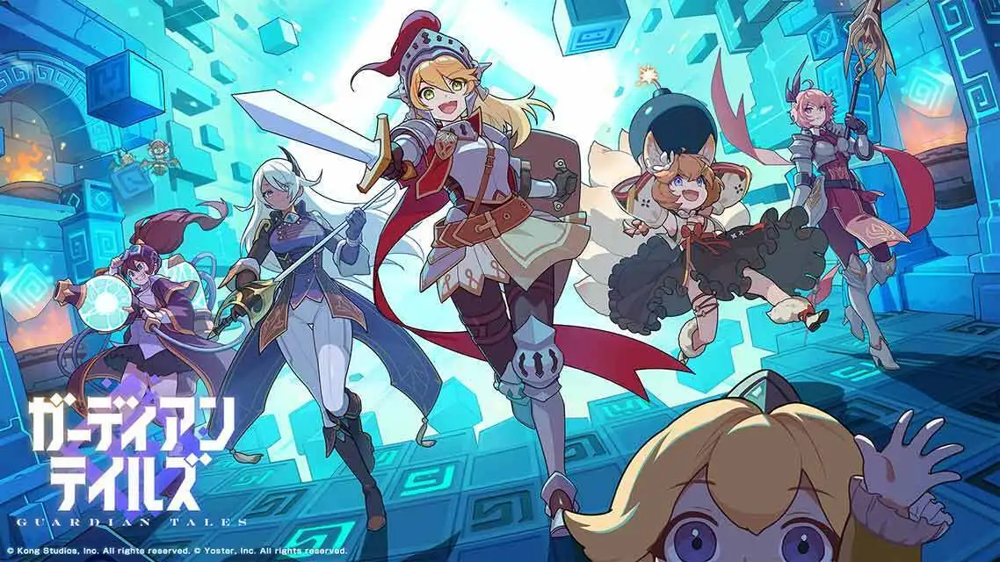

La Historia de Kanterbury
En Guardian Tales, el reino de Kanterbury está en peligro tras la invasión de fuerzas oscuras. Como guardián, deberás embarcarte en una aventura épica para salvar el mundo, descubrir la verdad detrás del caos y proteger a la princesa.
Sumérgete en una narrativa llena de giros inesperados, personajes memorables y decisiones que afectarán el destino del reino.
